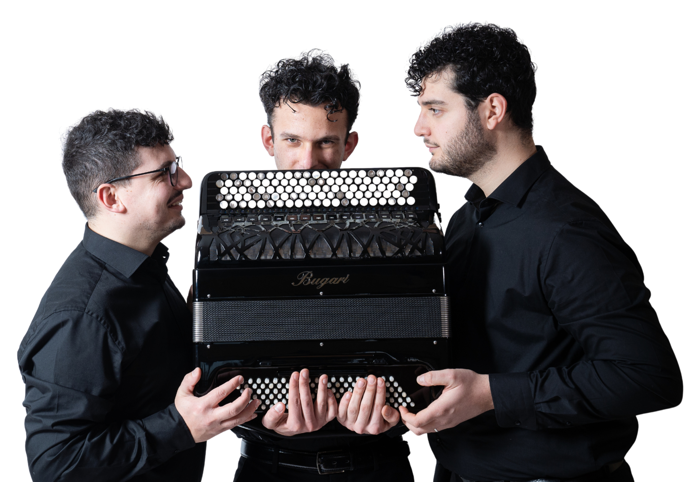

Musica, emozioni e armonie
Il Trio Spectrum nasce dall'incontro di tre musicisti uniti dalla passione per la musica e dalla ricerca di nuove possibilità espressive.
Il Trio Spectrum propone un repertorio dedicato alle molteplici possibilità espressive del Bayan, spaziando dalla musica classica alla contemporaneità, attraverso trascrizioni, arrangiamenti e composizioni originali.
Trascrizioni e interpretazioni di pagine del grande repertorio, adattate alle caratteristiche timbriche ed espressive del trio di Bayan.
Brani originali e composizioni moderne che valorizzano le nuove possibilità sonore dello strumento.
Un percorso musicale che comprende celebri temi cinematografici e arrangiamenti pensati per esaltare il colore e la potenza espressiva del Bayan.
Programmi pensati per teatri, festival, stagioni concertistiche ed eventi culturali.
Il Trio Spectrum ha ottenuto numerosi premi e riconoscimenti in concorsi nazionali e internazionali, distinguendosi per la qualità dell’interpretazione e per la valorizzazione del Bayan come strumento protagonista della musica da camera.
Oltre i Confini rappresenta il primo progetto discografico del Trio Spectrum: un viaggio musicale nato dal desiderio di valorizzare il Bayan e mostrarne le straordinarie possibilità espressive.
Il titolo racchiude la visione artistica dell’ensemble: superare i confini stilistici, culturali e sonori, creando un dialogo tra repertori diversi e mettendo in luce la versatilità di uno strumento ancora poco conosciuto dal grande pubblico.
Ogni brano del disco racconta una tappa del percorso del Trio Spectrum, unendo ricerca, passione e interpretazione in un progetto che guarda alla tradizione ma con uno sguardo rivolto al futuro.
Il Trio Spectrum svolge un’intensa attività concertistica in collaborazione con associazioni, istituzioni musicali e realtà culturali su tutto il territorio nazionale.
Le esibizioni del Trio si svolgono in auditorium, teatri e spazi culturali, proponendo programmi musicali capaci di unire tradizione, innovazione e ricerca sonora attraverso l’originale formazione di tre Bayan.
Ogni concerto rappresenta un viaggio attraverso differenti epoche e linguaggi musicali, con l’obiettivo di avvicinare il pubblico alla scoperta delle straordinarie possibilità espressive del Bayan.
Il Trio Spectrum ha collaborato con numerose associazioni e istituzioni musicali nell’ambito di stagioni concertistiche, rassegne ed eventi culturali.
Per informazioni e collaborazioni scriveteci.